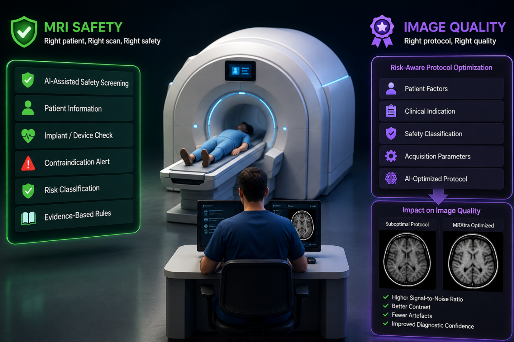

01
MRI safety screening
Structured digital screening with conditional branching, deterministic safety rules, contraindication flagging and risk stratification.
MRXtra is a web-based, AI-assisted clinical decision-support platform designed to strengthen MRI safety screening, workflow decision support and patient-specific protocol optimization in resource-limited clinical environments.

MRI safety and image quality are strongly influenced by pre-acquisition decisions, including safety screening, contraindication assessment, implant evaluation and protocol selection.
In resource-limited settings, these processes may remain paper-based, inconsistently documented and highly dependent on individual staff experience. This can contribute to incomplete screening, workflow delays, missed safety information and suboptimal acquisition.
MRXtra focuses on this upstream clinical workflow through a web-based clinical decision-support application, where patient-safety and acquisition decisions are made, rather than on downstream image interpretation alone.
MRXtra combines deterministic safety logic with AI-assisted decision support and structured workflow tools within a web-based clinical platform.
Structured digital screening with conditional branching, deterministic safety rules, contraindication flagging and risk stratification.
Patient- and risk-aware protocol suggestions incorporating clinical indication, anthropometry, implant considerations and estimated SAR.
Digital documentation, action tracking, communication, audit trails and standardized workflow records for clinical review and quality improvement.
Prospective single-arm pre-post quasi-experimental study in a Nigerian tertiary MRI centre: 80 patients in the paper-based baseline phase and 80 patients in the MRXtra-assisted phase.
MRXtra-assisted screening was associated with substantially higher screening completeness, greater contraindication detection and shorter total workflow time, while screening duration itself remained unchanged. Because this was a single-centre, non-randomized pre-post feasibility study, external and multicentre evaluation is required before broader effectiveness claims are made.
Accepted Abstract | AMAI-MICCAI 2026
MRXtra: An AI-Assisted System for MRI Safety Screening, Workflow Decision Support, and Protocol Optimization in Resource-Limited Settings. Accepted for AMAI-MICCAI 2026; conference publication forthcoming.
The development and evaluation of MRXtra are being conducted as a staged evidence programme rather than as an autonomous diagnostic system.
Engage MRI clinicians—radiographers and radiologists—to understand real needs and design solutions together.
Develop interpretable safety screening, workflow and protocol decision-support components suitable for resource-limited environments.
Evaluate the MRI safety rule engine against expert assessment and integrated clinical scenarios.
Completed prospective evaluation in routine MRI practice at a single Nigerian tertiary centre.
Extend evaluation across institutions, scanners, patient populations and clinical workflows.
MRXtra targets clinical settings where dedicated MRI safety personnel, integrated electronic records, workflow infrastructure and specialist decision support may be limited.
AMAI-MICCAI 2026
Accepted abstract; conference publication forthcoming.
View abstract status →Prospective single-centre pre-post clinical feasibility evaluation.
Manuscript under revision.
Development and clinical translation of AI-assisted MRI safety and acquisition decision support for resource-limited clinical settings.
Abdulrazaq A. Zubair; Musa Y. Dambele; M. Abba; Nafiu M. Muhammad; Abbas M. Rabiu; A. Muhammad; Zulyadaini A. Muhammad; M. Tarisiro; Musa M. Sani; M. Sidi; M. Yakubu; Charles B. Delahunt.
Department of Radiography and Radiation Sciences, Nigeria
Department of Medical Radiography, Nigeria
Department of Radiology, Kano, Nigeria
Abuja, Nigeria
Nigeria
Africa
United Kingdom
School of Biomedical Engineering and Imaging Sciences, United Kingdom
Seattle, USA
This project is supported by a 2026 MICCAI Society Award for the Advancement of Health Equity. We also thank NordInsight (Denmark) and AIRA Africa for their generous collaborative support.
Research collaboration, clinical evaluation and academic enquiries are welcome.